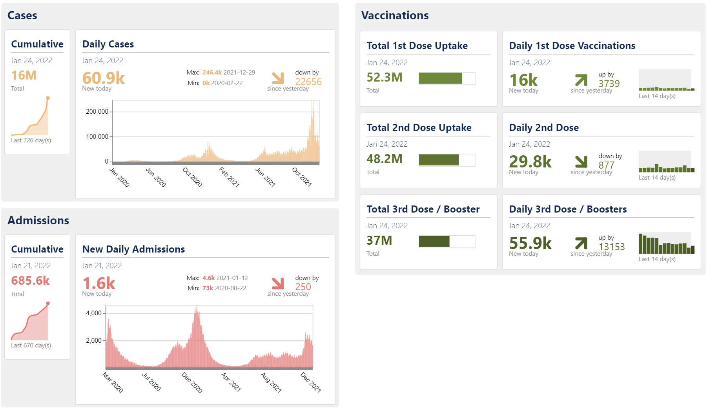

Benjamin Bach, PhD, HDR
Research Scientist
Inria, France
Bivwac team
200 Av. de la vieille Tour
33400 Talence, France
benjamin.bach@inria.fr
Google Scholar
LinkedIn
OrcID: 0000-0002-9201-7744
Full CV
Research & Bio
Publications
Teaching
Visualizations in the Context of Covid19
This page summarizes efforts from different projects around helping to understand the Covid10 pandemie.
People involved
- Benjamin Bach
- Devanjan Bhattacharya
- James Scott-Brown
Publications

Visualization for Epidemiological Modelling: Challenges, Solutions, Reflections & Recommendation Jason Dykes, Alfie Abdul-Rahman, Daniel Archambault, Benjamin Bach, Rita Borgo, Min Chen, et al. Phil. Trans. R. Soc. A. (special issue on ‘Technical challenges of modelling real-life epidemics and examples of overcoming these’) (2022) [PAPER] [WEB] [VIDEO]